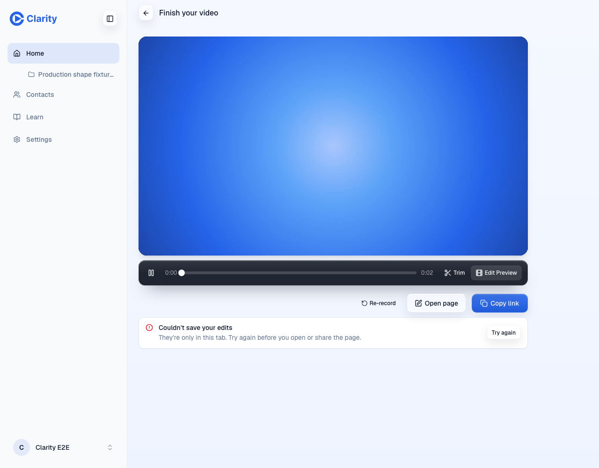
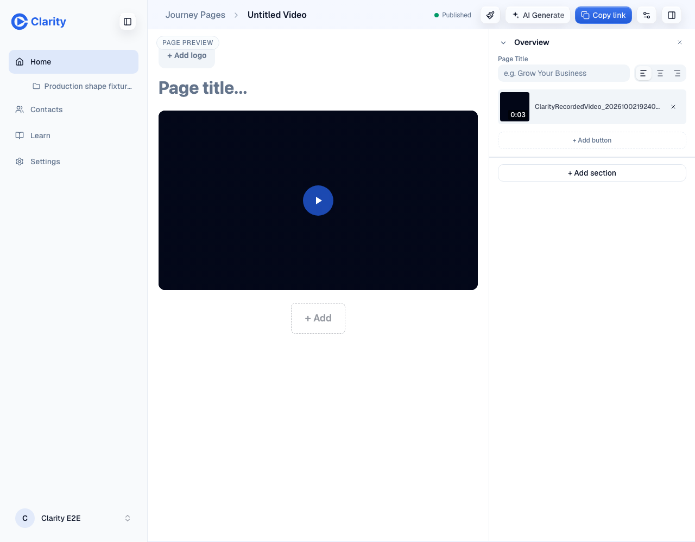
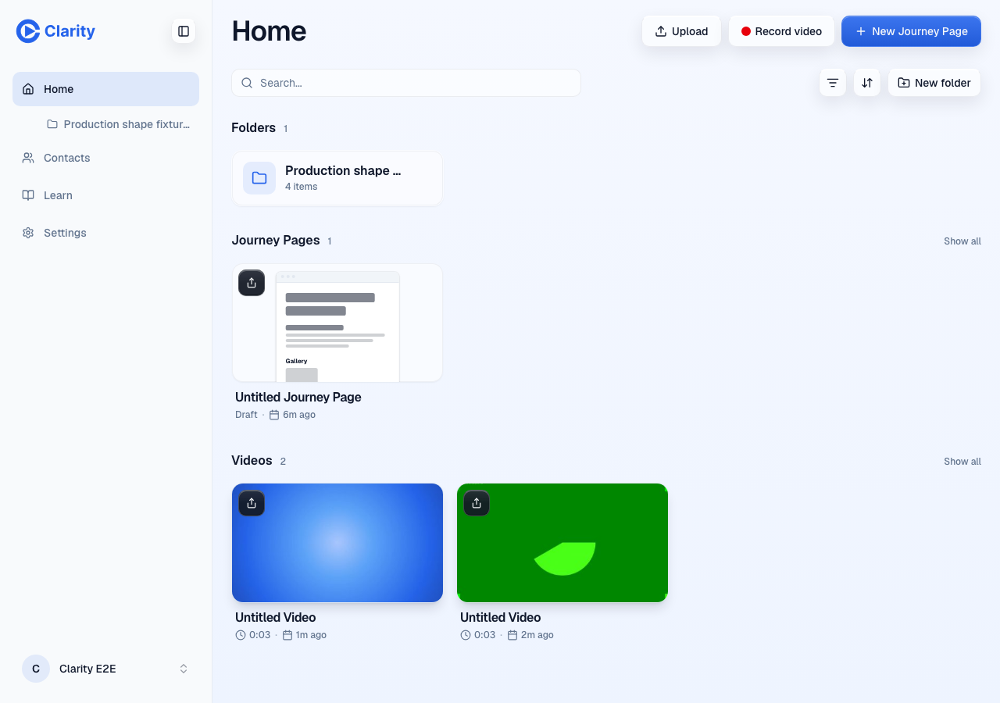
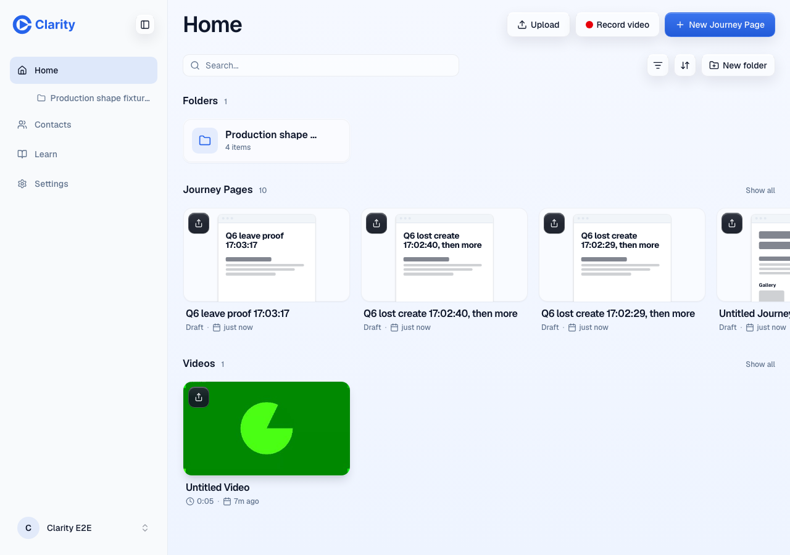
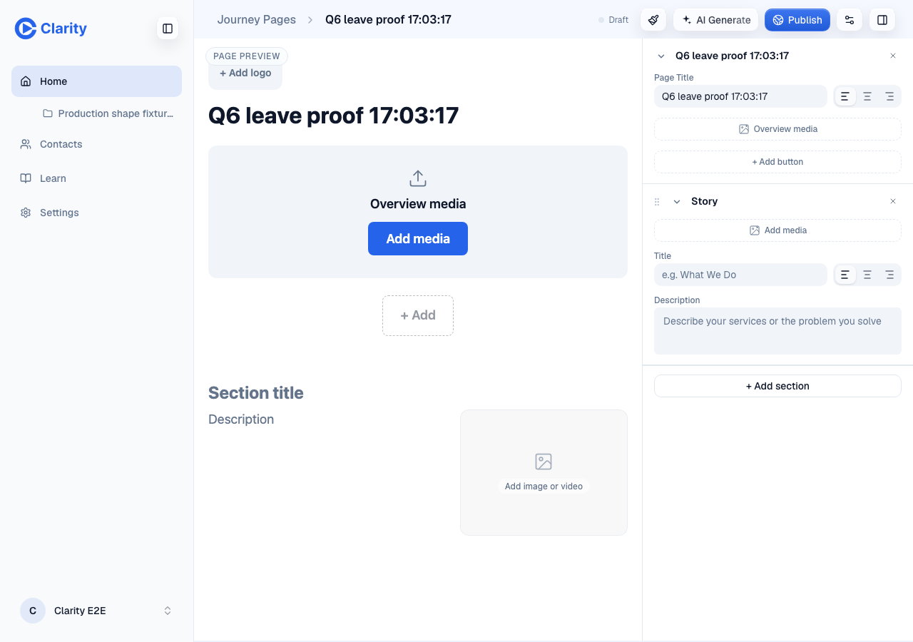
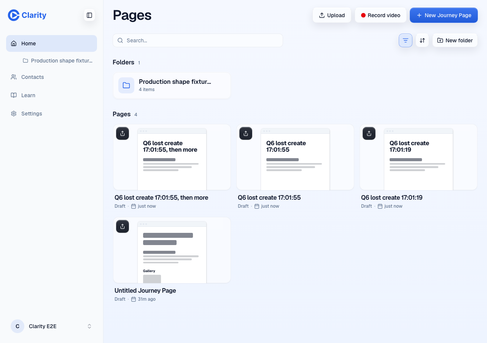
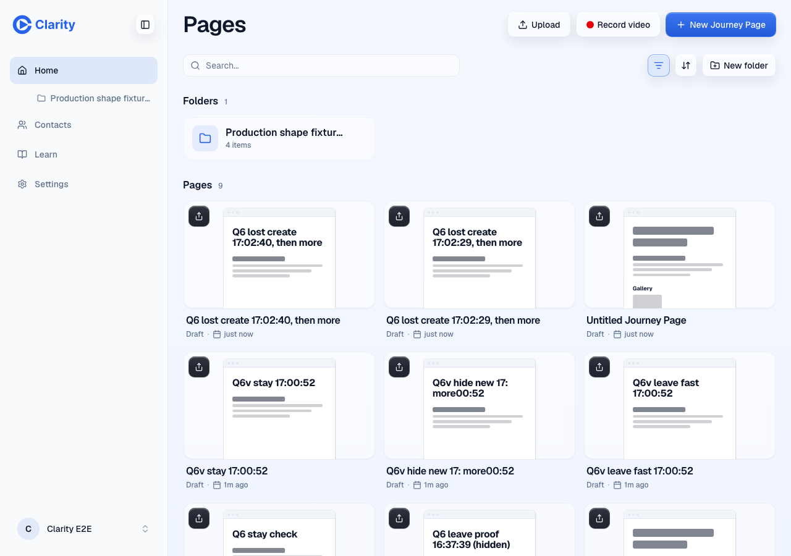
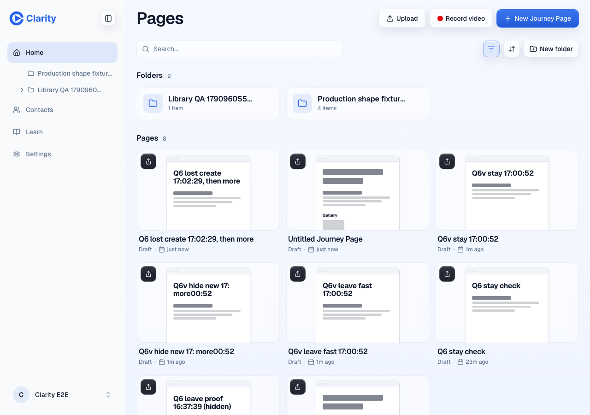

Captured on PR previews with a fresh Chromium, the e2e pro account, and a fake camera. Logs: recorder, new page before, new page after, lost create before, lost create after (stay), lost create after (leave).
The trim save POST /api/tree/media/videos/:id/edit was forced to answer 404 in the browser. Before this change, Open page awaited a flush that resolved as saved and navigated; the route test shows it landing on /edit/page-1.

/record.
Typed a title on /new, then clicked Home in the sidebar about 130 ms later, inside the 900 ms autosave debounce.


POST /api/journey-pages 201) and the rep stays on Home.
Hiding the tab 17 ms after an edit on /edit/:id sent the PUT at once (200), well inside the 900 ms debounce; the stored draft carried the edit. The hide was simulated by overriding document.visibilityState and dispatching visibilitychange.
The first autosave's POST /api/journey-pages reached the router and committed (201), but the page told the editor the connection dropped. The rep then typed more.


already_created (409), and the editor saved over that page with PUT (200). One page, at revision 2, holding the latest title (log).